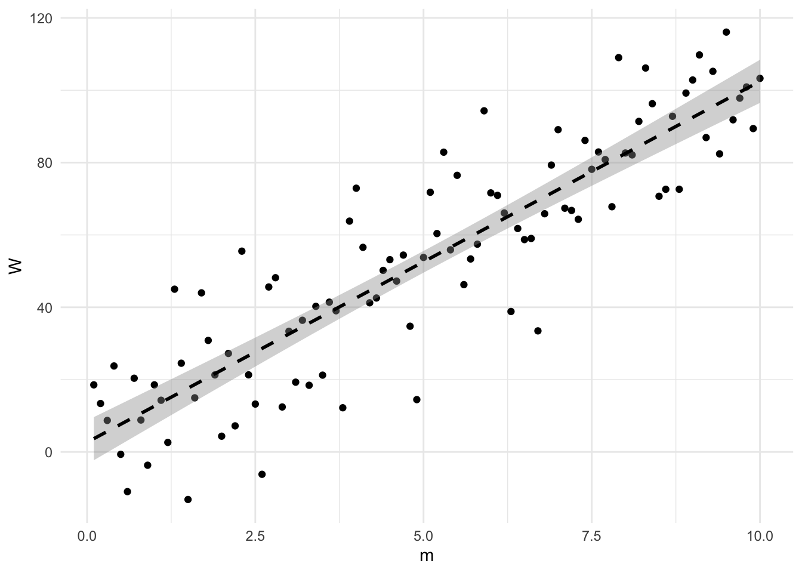
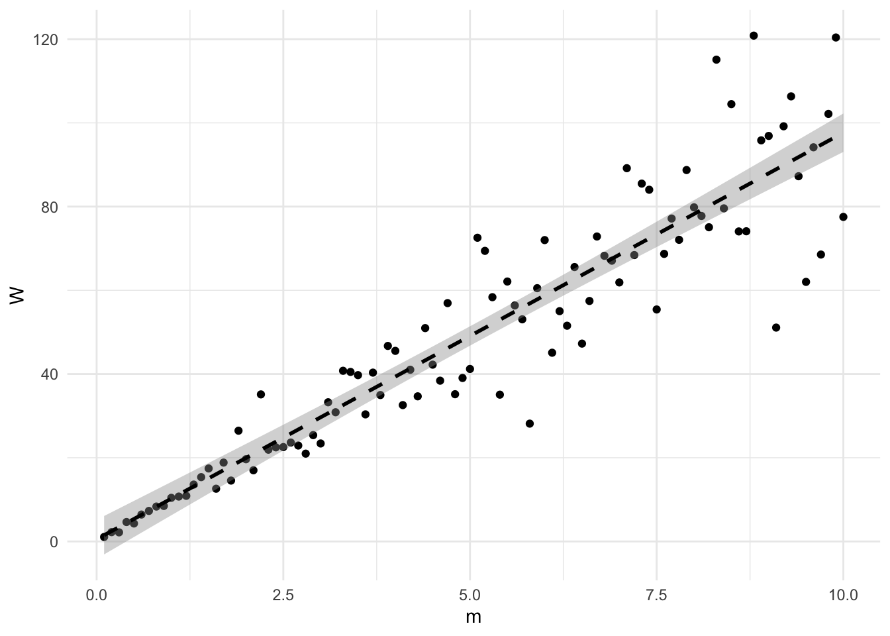
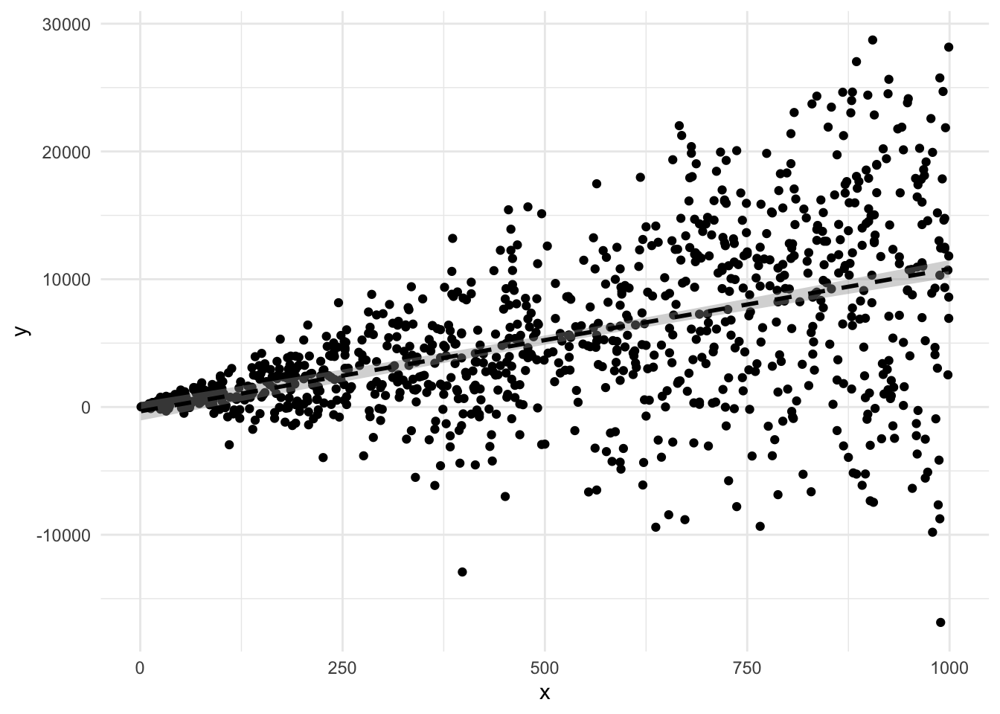
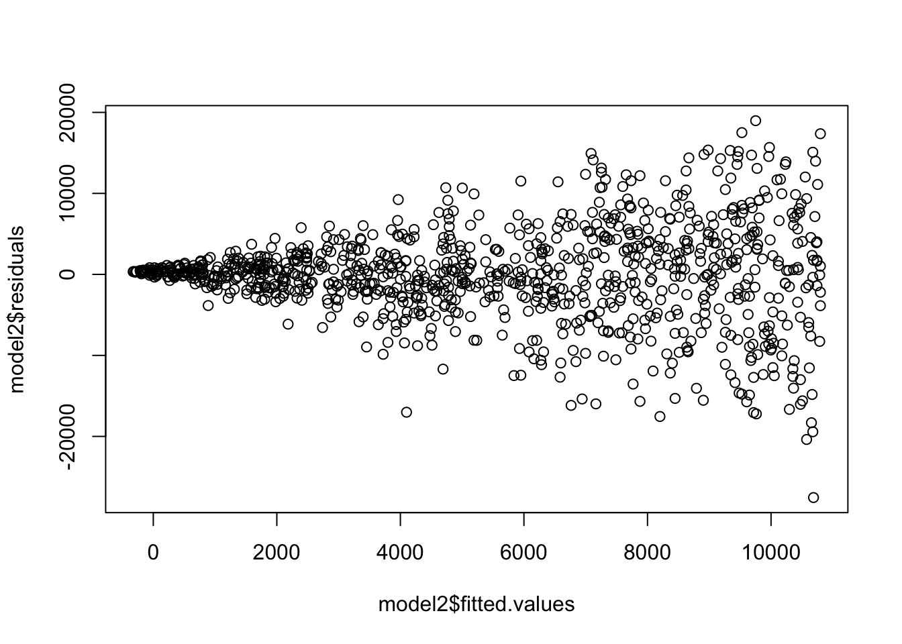
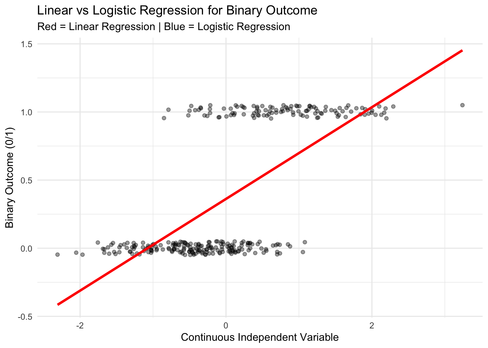
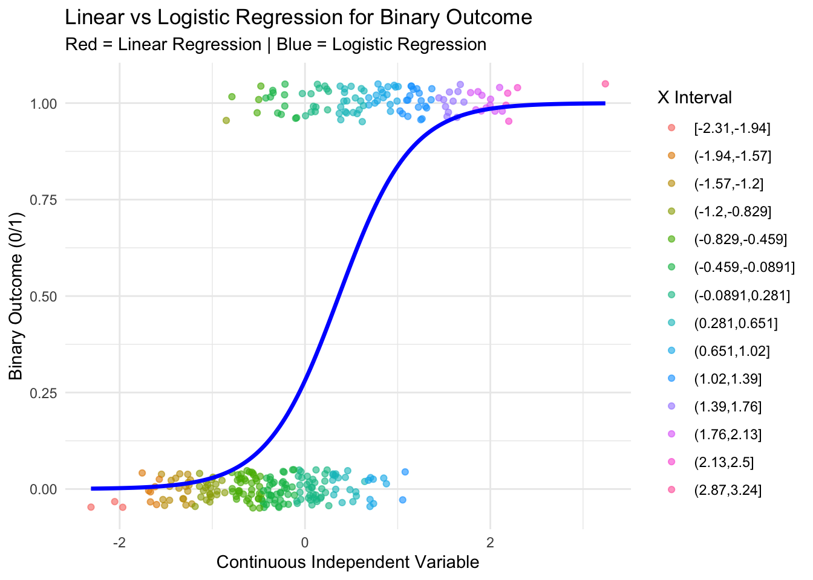
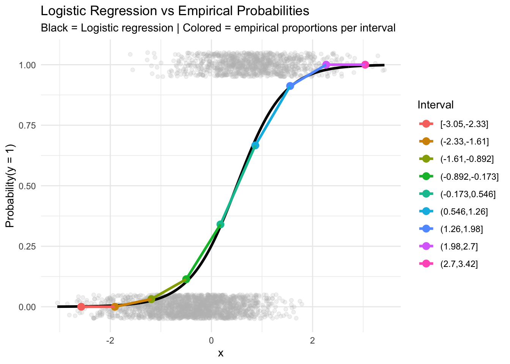
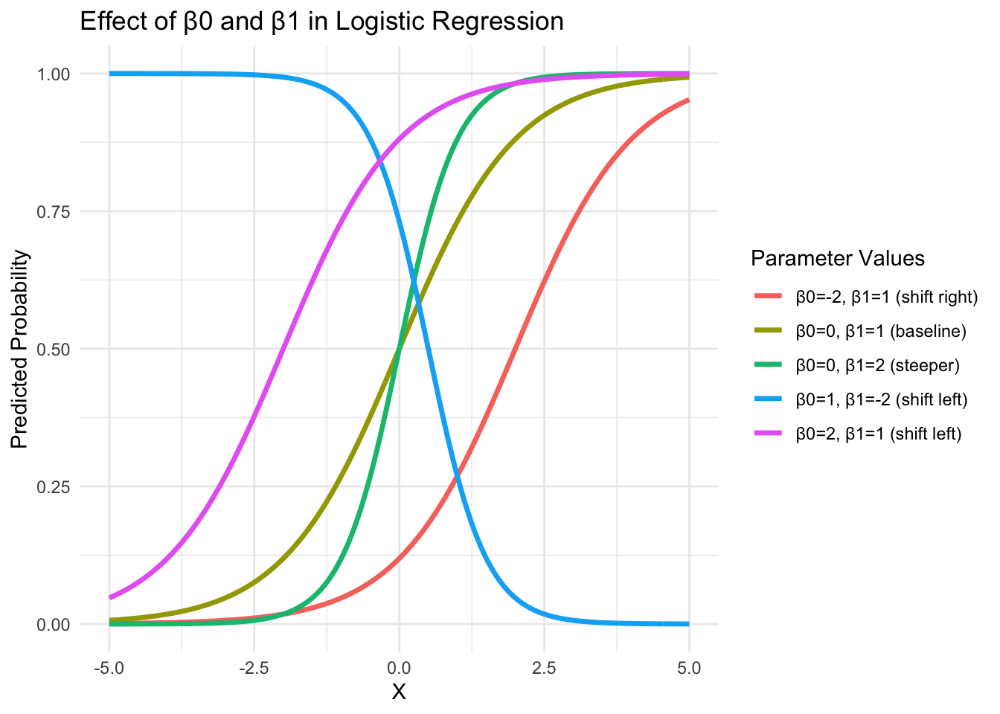
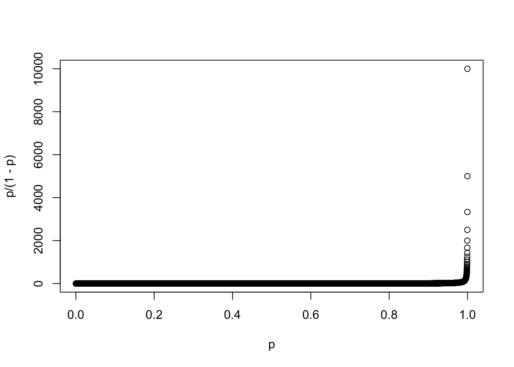

Of course, in practice we are often interested in studying relationships between different types of variables, and the choice of statistical method depends on the measurement scale of both the independent and dependent variables. When both the independent and dependent variables are categorical (for example, gender and voting preference, coded at the individual level as 0 and 1), we typically use crosstabulation and chi-square tests to assess whether the distribution of one variable differs across the categories of the other. If the independent variable is categorical but the dependent variable is continuous (for example, comparing average incomes across two or more groups), we use mean comparison methods such as the t-test to determine whether group means differ. When the independent variable is continuous and the dependent variable is categorical (for example, predicting whether someone purchases a product based on age or income), logistic regression (often expressed in terms of logits) allows us to model the probability of category membership as a function of the continuous predictors. Finally, when both variables are continuous, we can assess their association with correlation and explore predictive relationships with regression analysis. Understanding these distinctions helps you choose appropriate analytical tools that match the nature of your data and research questions.
Recommended types of analysis based on variable types
DV: Categorical
DV: Interval/Continuous
IV: Categorical
Crosstabs / χ² Test
Compare Means / t-Test
IV: Interval/Continuous
Logistic Regression / Logits
Correlation / Scatter / Regression
In the previous session, we examined how to conduct t-tests and perform correlation and linear regression analyses—two cases in which the dependent variable is continuous. However, we did not discuss the conditions under which linear regression provides a good approximation of the relationship between two variables, nor did we consider situations in which the dependent variable is categorical.
This session therefore begins by reviewing the main assumptions underlying linear regression. It then introduces alternative models, such as logistic regression, which allow us to assess the impact of continuous independent variables on categorical dependent variables.
Linear regressions : hypotheses
We have seen previously that a linear model can be written as :
where the \(\beta_i\) coefficients are all constant - which is why it is a linear link between variable \(Y\) and \(X\).
Assumptions
For this relation to hold, the following hypotheses must be true :
\(\mathbb{E} (\epsilon_i|X_i) = 0\). That basically means that the expectation of the error should be (there is no systematic error in your estimation), once you know \(X_i\). This is called exogeneity : the error comes from elsewhere, and is not related to your variables.
\(\mathbb{E} (\epsilon_i^2) = \sigma^2\). That means that the variance of the error is constant accross all values. This condition is called ‘homoskedasticity’. The case where \(\mathbb{E} (\epsilon_i^2) \ne \sigma^2\) is called heteroskedasticity.
\(\mathbb{E} (\epsilon_i \epsilon_j)= 0\) or \(\mathbb{C}ov(\epsilon_i, \epsilon_j) = 0\), which is called the linear independence of the errors assumption.
\(X_{ij}\) is non random \(\forall i = 1,...,n ; j = 1, ..., k\) (X is not a random variable, contrary to the error and the dependent variable).
\(\text{rank}((X_{ij})) = k\). This is the mathematical way to say that the different independent variables are indeed independent from one another. That means that there is no way to obtain any \(X_j\) using sums and combinations of all the other \(X_k\) (where \(k \ne j\)). In the econometric jargon, violating that assumption would lead to a model with so-called multicollinearity between predictors.
Visualising the different assumptions
You may very legitimately feel puzzled by these mathematical expressions, as their meaning is not always immediately intuitive. This is why plotting graphs and working through concrete examples can help clarify what these assumptions really mean. Imagine that you are studying a physical phenomenon.
From physics, you know that the weight of an object is given by the formula:
\[\begin{equation}
W = m \times g,
\end{equation}\]
where \(m\) is the mass of the object and \(g\) is the acceleration due to gravity. On Earth, \(g \approx 9.81 \, \frac{m}{s^2}\).
Now suppose you want to conduct a small experiment to verify this physical law using real data. For example, you could ask 100 students to each take an object with a mass between 0.01 kg and 10 kg and measure its weight using a dynamometer (an instrument that measures force in Newtons using a spring).
In theory, each student should obtain a measurement equal to:
In practice, however, the measurements will not be perfectly equal to this theoretical prediction. Measurement accuracy may vary depending on the student’s handling of the instrument, the precision of the dynamometer, calibration issues, or other small sources of error. All these sources of errors can lead to a total error, \(\epsilon_i\), that should not be related to your prediction, in a systematic way.
For example, a student measuring a mass of 0.1 kg might record a weight of 0.96 N instead of 0.981 N, while another student measuring a mass of 10 kg might record 102 N instead of 98.1 N.
As a result, each observed weight \(W_i\) will differ slightly from the theoretical prediction. We can write this as:
where \(\varepsilon_i\) represents the error term—that is, the difference between the observed value and the true physical relationship. You could simulate such sample in R by plotting the following graph, where I assume that the errors have a normal distribution with constant standard deviation \(\sigma\) (meaning that the values of your errors may vary). This would be the perfect example of a linear regression model.
library(tidyverse)
── Attaching core tidyverse packages ──────────────────────── tidyverse 2.0.0 ──
✔ dplyr 1.1.4 ✔ readr 2.1.6
✔ forcats 1.0.1 ✔ stringr 1.6.0
✔ ggplot2 4.0.1 ✔ tibble 3.3.0
✔ lubridate 1.9.4 ✔ tidyr 1.3.2
✔ purrr 1.2.0
── Conflicts ────────────────────────────────────────── tidyverse_conflicts() ──
✖ dplyr::filter() masks stats::filter()
✖ dplyr::lag() masks stats::lag()
ℹ Use the conflicted package (<http://conflicted.r-lib.org/>) to force all conflicts to become errors
library(tidyverse)m <-sample(1:100, 100, replace =FALSE) /10W <-9.81* m +rnorm(100, 0, 15)dat <-data.frame(m, W)lm_model_biased <-lm(W ~ m, data = dat)summary(lm_model_biased)
Call:
lm(formula = W ~ m, data = dat)
Residuals:
Min 1Q Median 3Q Max
-25.3547 -9.7773 -0.1643 8.2333 31.2058
Coefficients:
Estimate Std. Error t value Pr(>|t|)
(Intercept) 2.171 2.588 0.839 0.404
m 9.571 0.445 21.508 <2e-16 ***
---
Signif. codes: 0 '***' 0.001 '**' 0.01 '*' 0.05 '.' 0.1 ' ' 1
Residual standard error: 12.85 on 98 degrees of freedom
Multiple R-squared: 0.8252, Adjusted R-squared: 0.8234
F-statistic: 462.6 on 1 and 98 DF, p-value: < 2.2e-16
dat %>%ggplot(aes(x = m, y = W)) +geom_point() +geom_smooth(method ="lm",linetype ="dashed",color ="black",se =TRUE,linewidth =1,alpha =0.4)+theme_minimal()
`geom_smooth()` using formula = 'y ~ x'

The exogeneity condition means that these errors are not systematically related to the mass. In other words, the measurement errors are purely random and do not depend on whether the mass is small or large:
This assumption ensures that, on average, the errors cancel out, allowing us to recover the true relationship between mass and weight using linear regression.
When the exogeneity assumption is violated: biased measurement for large masses
The exogeneity assumption requires that the error term is not systematically related to the explanatory variable:
This means that measurement errors must be purely random and must not depend on the mass being measured.
However, this assumption may be violated if the measurement instrument is imperfect in a systematic way. Suppose, for example, that the dynamometer is poorly calibrated for higher masses, and that the error of the calibrator is a function of \(m^3\). This could happen if the spring inside the dynamometer becomes slightly stiffer when stretched too much, causing the instrument to overestimate the true weight for heavier objects.
In this case, the measurement error would no longer be random. Instead, it would increase with mass. Heavier objects would tend to have larger positive errors, while lighter objects would have smaller errors.
library(tidyverse)library(tidyverse)m <-sample(1:100, 100, replace =FALSE) /10W <-9.81* m +rnorm(100, m**3, 15)dat <-data.frame(m, W)lm_model_biased <-lm(W ~ m, data = dat)summary(lm_model_biased)
Call:
lm(formula = W ~ m, data = dat)
Residuals:
Min 1Q Median 3Q Max
-142.88 -101.17 -22.93 88.59 293.36
Coefficients:
Estimate Std. Error t value Pr(>|t|)
(Intercept) -206.77 22.86 -9.046 1.42e-14 ***
m 101.23 3.93 25.762 < 2e-16 ***
---
Signif. codes: 0 '***' 0.001 '**' 0.01 '*' 0.05 '.' 0.1 ' ' 1
Residual standard error: 113.4 on 98 degrees of freedom
Multiple R-squared: 0.8713, Adjusted R-squared: 0.87
F-statistic: 663.7 on 1 and 98 DF, p-value: < 2.2e-16
dat %>%ggplot(aes(x = m, y = W)) +geom_point() +geom_smooth(method ="lm",linetype ="dashed",color ="black",se =TRUE,linewidth =1,alpha =0.4)+theme_minimal()
In this situation, larger masses will tend to have larger errors on average. This creates a correlation between the error term and the explanatory variable:
As a result, linear regression will no longer recover the true physical relationship. Instead of estimating the true coefficient of 9.81, it will estimate a biased coefficient that incorporates both the true physical effect and the measurement bias.
This example illustrates the key idea behind endogeneity: when the error term is correlated with the explanatory variable, the regression estimates become biased and do not reflect the true causal relationship. The error being endogenous basically means that your error term is actually caused by your independent variable. The error being exogeneous means that it is not caused by your independent variables.
Homoskedasticity and heteroskedasticity
A second important assumption when conducting a linear regression is that the variance of the error term should be constant. This assumption is called homoskedasticity. It means that the variability of the error term should not depend on the value of the independent variable.
Returning to our example, suppose that your dynamometer provides very precise measurements for small masses, but becomes less reliable for larger masses due to poor calibration or mechanical limitations. In this case, measurements for small masses will be tightly clustered around the true value, while measurements for larger masses will be more dispersed.
This means that although the average relationship between mass and weight may still be correct, the variability of the errors increases with mass.
Graphically, this results in a “fan-shaped” pattern: observations are tightly grouped for small masses and become increasingly spread out as mass increases.
Importantly, unlike violations of exogeneity, heteroskedasticity does not bias the estimated regression coefficients. However, it does affect the precision of the estimates and leads to incorrect standard errors, confidence intervals, and hypothesis tests if not properly accounted for. A solution to these problems is to run “robust linear models”, through rlm. These account for the heteroskedasticity and compute better versions of the standard errors (and associated hypotheses). A good diagnostics for heteroskedasticity is also to plot residuals against fitted.values and to see if you can detect clear patterns in the data. This is examplified in the examples below.
library(tidyverse)library(tidyverse)m <-sample(1:100, 100, replace =FALSE) /10W <-9.81* m +rnorm(100,0, 2*m)dat <-data.frame(m, W)lm_model_biased <-lm(W ~ m, data = dat)summary(lm_model_biased)
Call:
lm(formula = W ~ m, data = dat)
Residuals:
Min 1Q Median 3Q Max
-37.545 -5.744 -0.201 4.726 49.344
Coefficients:
Estimate Std. Error t value Pr(>|t|)
(Intercept) 0.5644 2.3333 0.242 0.809
m 9.5902 0.4011 23.908 <2e-16 ***
---
Signif. codes: 0 '***' 0.001 '**' 0.01 '*' 0.05 '.' 0.1 ' ' 1
Residual standard error: 11.58 on 98 degrees of freedom
Multiple R-squared: 0.8536, Adjusted R-squared: 0.8521
F-statistic: 571.6 on 1 and 98 DF, p-value: < 2.2e-16
dat %>%ggplot(aes(x = m, y = W)) +geom_point() +geom_smooth(method ="lm",linetype ="dashed",color ="black",se =TRUE,linewidth =1,alpha =0.4)+theme_minimal()
`geom_smooth()` using formula = 'y ~ x'

library(performance)library(MASS)
Attaching package: 'MASS'
The following object is masked from 'package:dplyr':
select
library(stargazer)
Please cite as:
Hlavac, Marek (2022). stargazer: Well-Formatted Regression and Summary Statistics Tables.
R package version 5.2.3. https://CRAN.R-project.org/package=stargazer
x <-sample(1:1000, 1000, replace ="TRUE")y <-10*x +rnorm(1000, 0, 10)y <-data.frame(y, x)model1 <-lm(y ~ x, data = y)y <-10*x +rnorm(1000, 0, 10*(x))y <-data.frame(y, x)model2 <-lm(y ~ x, data = y)y %>%ggplot(aes(x = x, y = y)) +geom_point()+geom_smooth(method ="lm", linetype ="dashed", color ="black", se =TRUE, linewidth =1, alpha =0.4)+theme_minimal()
`geom_smooth()` using formula = 'y ~ x'

mean(model2$residuals)
[1] -1.418812e-13
plot(model2$fitted.values, model2$residuals)

check_heteroscedasticity(model2) # Run a Breush-Pagan test
The last typical problem that can arise in linear regressions is multicollinearity. This occurs when two explanatory variables are highly correlated with each other.
Returning to our weight-measurement example, suppose that in addition to mass, you would like to verify whether weight is influenced by the volume of the objects. To do this, you might ask all students to also compute the volume of their objects and include volume as a second explanatory variable in the regression.
where \(m_i\) is the mass, \(V_i\) is the volume, and \(\varepsilon_i\) is the error term. Your goal would be to estimate the coefficients \(\alpha\) and \(\beta\).
However, suppose that all the objects are made of the same material, such as copper. In physics, mass and volume are mechanically related through the density:
where \(\rho_c\) is the density of copper (in \(kg/m^3\)). In practice, students may make small measurement errors when computing volumes, so the observed relationship becomes:
This means that mass and volume are almost perfectly correlated. As a result, the regression has difficulty distinguishing the individual effect of mass from the effect of volume, because both variables contain nearly the same information.
This situation is called multicollinearity.
Importantly, multicollinearity does not bias the estimated coefficients. However, it makes them much less precise: their standard errors increase, and the estimates may become unstable or highly sensitive to small changes in the data. As a result, it becomes difficult to determine which variable truly affects the outcome.
In our example, since weight is physically determined by mass, adding volume does not provide meaningful additional information, but it does make the estimation less precise because of the strong correlation between mass and volume. Multicollinearity makes it difficult to separate the individual effects of correlated predictors, because changing one predictor almost mechanically implies changing the other.
You can test for multicollinearity in R using the function check_collinearity(), which indicates whether your explanatory variables are highly correlated. This function typically reports the Variance Inflation Factor (VIF), a measure of how much the variance of a coefficient estimate is inflated due to multicollinearity. Large VIF values indicate problematic levels of collinearity between predictors.
When multicollinearity is present, one possible solution is to reduce the number of explanatory variables. This can be done using advanced data reduction techniques, such as Principal Component Analysis (PCA), which combines correlated variables into a smaller number of independent components.
However, an even more important approach is to rely on theory to guide variable selection.
In our example, mass and volume are highly correlated because all objects are made of copper, which has a constant density. From physics, we know that weight depends on mass, not on volume directly. Volume only affects weight indirectly through its relationship with mass.
Therefore, including both mass and volume in the regression does not provide meaningful additional information. Instead, it introduces multicollinearity and reduces the precision of the estimates. Based on theoretical considerations, the appropriate solution is to exclude volume from the regression and keep mass as the relevant explanatory variable.
This reasoning also applies to social science data. When two variables measure closely related concepts, or when one variable mechanically determines another, including both in a regression may create multicollinearity without improving the model. In such cases, theory and substantive knowledge should guide the choice of which variables to include.
library(performance)set.seed(123)m <-sample(1:100, 100, replace =FALSE) /10# density of copper ≈ 8920 kg/m^3v <- m/8920+rnorm(100, 0, 0.00001) # small measurement errory <-9.81*m +rnorm(100, 0, 10)model1 <-lm(y ~ m)model2 <-lm(y ~ m + v)summary(model1)
Call:
lm(formula = y ~ m)
Residuals:
Min 1Q Median 3Q Max
-33.348 -8.185 -0.711 7.229 27.163
Coefficients:
Estimate Std. Error t value Pr(>|t|)
(Intercept) -0.7584 2.2105 -0.343 0.732
m 9.9141 0.3800 26.088 <2e-16 ***
---
Signif. codes: 0 '***' 0.001 '**' 0.01 '*' 0.05 '.' 0.1 ' ' 1
Residual standard error: 10.97 on 98 degrees of freedom
Multiple R-squared: 0.8741, Adjusted R-squared: 0.8728
F-statistic: 680.6 on 1 and 98 DF, p-value: < 2.2e-16
summary(model2)
Call:
lm(formula = y ~ m + v)
Residuals:
Min 1Q Median 3Q Max
-33.327 -7.804 -0.782 7.123 26.686
Coefficients:
Estimate Std. Error t value Pr(>|t|)
(Intercept) -7.326e-01 2.223e+00 -0.330 0.742
m 1.350e+01 1.347e+01 1.002 0.319
v -3.203e+04 1.203e+05 -0.266 0.791
Residual standard error: 11.02 on 97 degrees of freedom
Multiple R-squared: 0.8742, Adjusted R-squared: 0.8716
F-statistic: 337.1 on 2 and 97 DF, p-value: < 2.2e-16
check_collinearity(model2)
# Check for Multicollinearity
High Correlation
Term VIF VIF 95% CI adj. VIF Tolerance Tolerance 95% CI
m 1243.97 [858.74, 1802.22] 35.27 8.04e-04 [0.00, 0.00]
v 1243.97 [858.74, 1802.22] 35.27 8.04e-04 [0.00, 0.00]
Models with interactions
Another thing we didn’t cover in the last session was interactions. You may now wonder how heterogeneous your results are, and how your variables interact. In our example with the far-right vote, perhaps the effect of income on the far-right vote is conditional on another variable, that is for instance the level of education ; and vice-versa. In other words, the results might be heterogeneous : a rich commune with less educated people can potentially vote differently than a rich commune with many higher educated persons. This is what is meant by checking for interactions between independent variables. For instance, in the case of a regression model with three variables, instead of checking :
Which means that any increase \(\Delta X_{1i}\) in the variable \(X_{1i}\) no longer has an impact \(\beta_1 \Delta X_{1i}\) on \(Y_i\), but an impact \(\Delta X_{1i} (\beta_1 + \beta_3X_{3i})\), which therefore still depends on the variable \(X_{3i}\). Coming back to our example, we want to assess how income and education in a commune evolve and influence far-right voting. You only need to specify * in your regression to obtain the interaction, and we generally use ggpredict() to plot the predicted results associated with different levels in one of the two predictors.
Warning: There were 2 warnings in `mutate()`.
The first warning was:
ℹ In argument: `codecommune = as.numeric(codecommune)`.
Caused by warning:
! NAs introduced by coercion
ℹ Run `dplyr::last_dplyr_warnings()` to see the 1 remaining warning.
Joining with `by = join_by(codecommune, codedep, Year)`
And you see that your predicted values change with the level of education : in the more educated cases, the line becomes less steep. Here, only three values of education are plotted by the program to give an idea of the interaction in three scenarios (commune with low/medium/high proportion of educated people), but this shows that the more educated people there are in a commune, the less the impact of income on the RN vote will be important in that commune.
Non-linear regressions
Linear regression relies on strong assumptions about the error term, in particular homoskedasticity and normality. However, there are many situations in which these assumptions are violated. A typical example arises when the outcome variable is binary, such as whether an individual voted in the last election (\(Y = 1\) if yes, \(Y = 0\) if no), and the explanatory variable is continuous, such as income.
If we attempt to fit a linear regression in this context, the resulting model exhibits strong heteroskedasticity, since the variance of the error term depends on the value of \(X\). Indeed, when \(Y\) is binary, the variance conditional on \(X\) is given by \(P(Y=1|X)(1 - P(Y=1|X))\), which varies with \(X\). Moreover, the linear model may produce predicted values outside the logical range \([0,1]\), which is not meaningful when modeling probabilities.
Warning: Using `size` aesthetic for lines was deprecated in ggplot2 3.4.0.
ℹ Please use `linewidth` instead.

Instead, a more appropriate approach is to directly model the conditional probability of the outcome given the explanatory variable. That is, we aim to estimate:
One intuitive way to understand this is to divide the continuous variable \(X\) into intervals and compute, within each interval, the proportion of observations for which \(Y = 1\). This proportion provides an empirical estimate of the conditional probability of the outcome for values of \(X\) in that interval.
In the figure, this idea is illustrated using several intervals of \(X\). For each interval, the fraction of observations with \(Y = 1\) is computed. We observe that this probability varies systematically with \(X\), showing that the relationship between \(X\) and \(Y\) is not linear in levels, but instead affects the probability of the outcome.
This motivates the use of models specifically designed for binary outcomes, such as the logistic regression model, which ensures that predicted probabilities remain between 0 and 1 and properly accounts for the nonlinear relationship between \(X\) and \(P(Y=1|X)\).
The idea will instead be to associate every chunk of the continuous variables with probabilities of having, at this stage of the value \(X\), hence to estimate: \[\begin{equation}
P(Y = 1|X)
\end{equation}\]
Here, the example is shown for three different intervals of X :


Concept of logistic regression
The maximum of likelihood estimation
Constant probabilities
Suppose you are interested in the outcome of a binary event, where the probability of the event occurring is \(p\) and the probability of it not occurring is \(1 - p\). This follows Bernoulli’s probability distribution:
For example, imagine rolling a fair six-sided die. The probability of rolling a 1 (i.e., \(X = 1\)) is \(p = 1/6\), and the probability of rolling anything other than a 1 (i.e., \(X = 0\)) is \(1 - p = 5/6\). Many research questions involve finding such probabilities for binary outcomes, such as understanding why people vote or abstain, or why they vote for a particular party. These are binary outcomes, and calculating their probabilities using linear regression would not be appropriate.
Suppose you observe \(N\) independent binary outcomes, each determined by an unknown probability \(p\). Let \(n_1\) represent the number of outcomes where \(X = 1\), and \(N - n_1\) the number of outcomes where \(X = 0\). The likelihood function is:
This expression represents the probability of obtaining \(X = 1\)\(n_1\) times, multiplied by the probability of obtaining \(X = 0\)\(N - n_1\) times. If you do not know the probability \(p\) but have the outcomes for a large number of observations, you can estimate \(p\) by maximizing the likelihood function. This method is called .
A simple example
Let’s say you’re interested in estimating the probability of rolling a 1 on a fair die, but you don’t know the probability (which you know theoretically to be 1/6). Let \(X = 1\) if you roll a 1 and \(X = 0\) otherwise. The probabilities are:
You would typically compute the likelihood function as: \[\begin{equation}
\mathcal{L}(p) = \Pi_i^{n_1} (p_i) \Pi_i^{10000-n_1} (1-p_i) = p_i^{n_1} (1-p_i)^{10000-n_1}.
\end{equation}\] The goal is to maximize the likelihood function to find the value of \(p\) that makes the observed data most probable. To do this, take the log of the likelihood function:
Next, differentiate with respect to \(p\): \[\begin{equation}
\frac{d\text{log}(\mathbb{L}(p))}{dp} = \frac{n_1}{p} - \frac{10000 - n_1}{1 - p}.
\end{equation}\] Set the derivative equal to zero to solve for \(p\): \[\begin{equation}
\frac{n_1}{p} = \frac{10000 - n_1}{1 - p}.
\end{equation}\]
This simplifies to: \[\begin{equation}
p = \frac{n_1}{10000}.
\end{equation}\]
This result is simply the proportion of 1’s in the 10,000 rolls, which is the maximum likelihood estimate of the probability. According to the law of large numbers, as \(N \to \infty\), this estimate will converge to the true probability \(p\). Thus, maximizing the likelihood function allows us to estimate the probability distribution that best fits the data.
Non-constant probabilities
Now imagine that your probabilities depend on other explanatory variables \(x_1, x_2, x_3\). For example, in a research study seeking to understand voter behavior, the probability of an individual voting might depend on their income, gender, or political affiliation. In this case, you would seek to estimate the relationship between these variables and the outcome of voting.
which you would maximize to find the parameters that best fit the data.
Logistic function
The logistic function is : \[\begin{equation}
p_L (x) = \frac{1}{1+ e^{-(\beta_0 + \beta_1 x)}} = \frac{1}{1+e^{-(x-\mu)/s}} = \frac{e^{(x-\mu)/s}}{1+e^{(x-\mu)/s}}
\end{equation}\] and it is strictly bounded between 0 and 1, which is expected for a probability.
x <-c(1:10000)mu <-5000s <-500plot(x, exp((x-mu)/s)/(1+exp((x-mu)/s)))

You can use this logistic function in the likelihood function: \[\begin{equation}
\mathcal{L}(x) = \Pi_{i\ (y_i = 1)}^n p(x)_i \Pi_{i\ (y_i = 0)}^n (1 - p(x)_i),
\end{equation}\] maximize it, and find the parameters \(\beta_0\) and \(\beta_1\) that best fit your data.
This is the logic behind maximum likelihood estimation: you assume your probability follows a certain distribution (in this case, the logistic distribution), and then estimate the parameters that maximize the likelihood of obtaining your data. This is precisely what the glm function in R does when it fits a logistic regression model — it computes the parameters that maximize the likelihood function using numerical methods.
Logit
The logit is the inverse of the logistic function. It is defined as: \[\begin{equation}
\text{logit}(p(x)) = \ln (\frac{p(x)}{1-p(x)}) = \beta_0 + \beta_1 x,
\end{equation}\]
The logit is the inverse of the logistic function. It is defined as:
In other words, the logit is the logarithm of the odds. The odds is simply the ratio ($ $ ), and gives a real number that tells you how many times more likely (or less likely) you are to obtain the outcome. For example, if the probability of an event occurring is 20% (i.e., ($ p = 0.2 $)), the odds are: \[\begin{equation}
\text{odds} = \frac{0.2}{1 - 0.2} = 0.2 / 0.8 = 0.25.
\end{equation}\] This means the event is 4 times less likely to happen than not to happen.
On the other hand, if the probability of an event occurring is 80% (i.e., ($ p = 0.8 $)), the odds are: \[\begin{equation}
\text{odds} = \frac{0.8}{1 - 0.8} = 0.8 / 0.2 = 4.
\end{equation}\] This means the event is 4 times more likely to happen than not to happen.
When considering probabilities between 0 and 1, the odds function (\(\frac{x}{1-x}\)) increases very rapidly as the denominator approaches zero. This is why the log of the odds (the logit) provides a more manageable and continuous scale. For a visual comparison, here’s a plot in R showing the relationship between the probability (\(p\)) and the odds, as well as the logit :
p <-c(1:10000)/10000plot(p, p/(1-p))

plot(p, log(p/(1-p)))
Hence, you see that the logit associates every probability \(p\) with a continuous variable. In the special case where the probability \(p\) is a logistic function of variables \(X_1, X_2, \dots, X_k\), we can express this relationship as:
This means that any change in \(x_1\) results in a multiplicative change in the odds of the outcome occurring. The model allows you to compute the probability that best characterizes your process and helps to understand how each explanatory variable influences the outcome.
Now, if you decide that \(p\) is a function of other variables \(x_1, x_2, x_3\), you need a function that associates these real numbers with probabilities that range from 0 to 1. This is exactly what the logistic regression model does — it provides a way to model the relationship between the independent variables and a binary outcome, ensuring that the probabilities stay within the valid range of 0 and 1.
But now, imagine you want to understand what drives the probability. In other words, you want to know how different factors (i.e., the explanatory variables) affect the likelihood of the outcome. The logistic regression model, through maximum likelihood estimation, gives you the answer to this question by estimating the coefficients \(\beta_1, \beta_2, \dots, \beta_k\), which tell you the effect of each variable on the log-odds of the outcome.